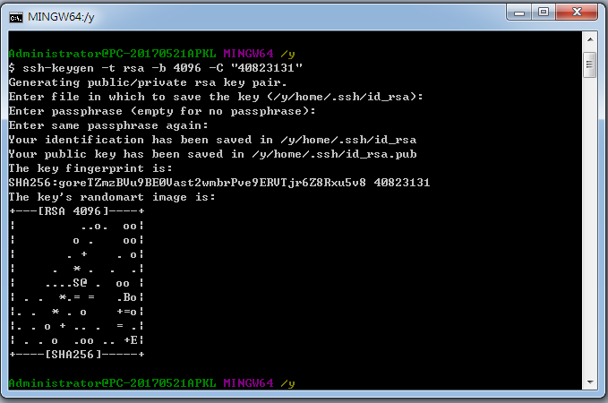

操作內容教學 <<
Previous Next >> SSH Putty設定
產生SSH KEY
利用隨身系統輸入指令sh，如下圖

輸入指令ssh-keygen -t rsa -b 4096 -C "學號"
預設之金鑰儲存在y:\home\.ssh目錄裡

使用puttygen將private key(id_rsa)導入，並轉換為putty能夠讀懂的格式(.ppk)檔案
存好(.ppk)檔後

使用scite將public key (id_rsa.pub)打開，到工具列找到Options-->Wrap就能看建完整的檔案內容

按下後將顯示完整內容如下:

將完整public key內容複製，進入github右上角下拉選單點擊settings

點擊SSH and GPG keys

點擊New SSH key，將複製的內容貼上並儲存就可以使用了

操作內容教學 <<
Previous Next >> SSH Putty設定